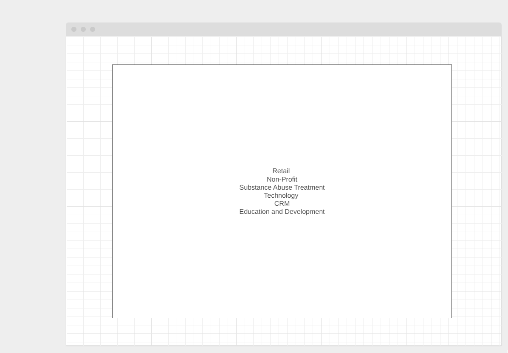
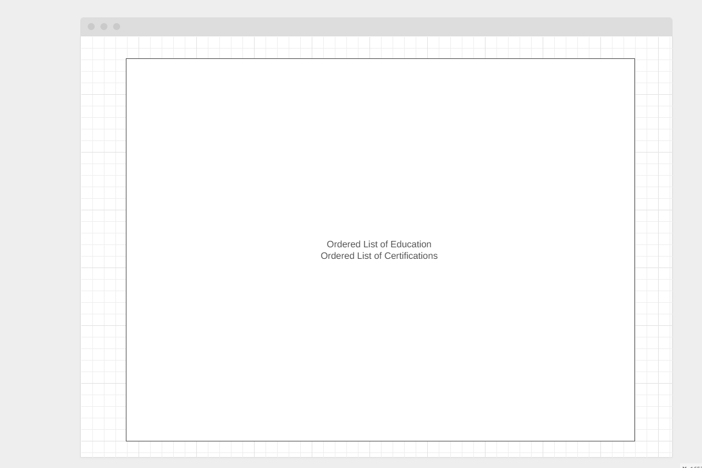

What is the goal(s) of your portfolio website?
I want to create a digital resume for potential employers. Basically, I will be building out my current resume and digital form.
When this project is complete,
I would love to be able to share it with potential employers. I want to be able to provide real
links to actual projects I've worked on so they can get a good idea of my experience.

What information is most important for your audience to see?
I believe that all the information is a typical resume would be good to see. I think it will also be
great to have real links to projects. In my success page, I am going to link to some of the actual projects I've worked on.
I think it will also be really important to emphazise my idustry specific skills; that will speak more to my target audience.

How will your page layout or design elements help to achieve your portfolio goals?
I want to make this digital resume closely resemble an standard resume - however, the difference will be in functionality.
Containing certain elements and playing with the design will be great - but I think showing off some of the real projects I've worked on
and making it easy to access those projects will be very beneficial
